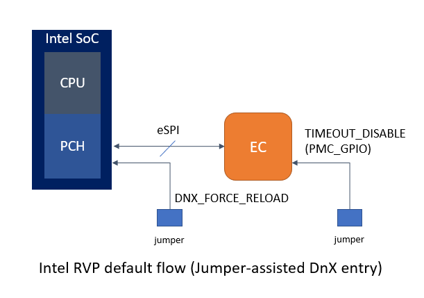
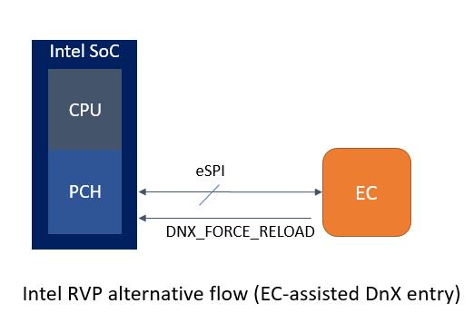
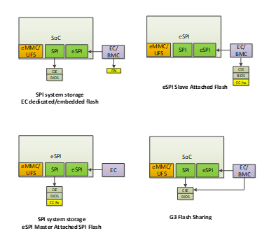

EC support for Intel Download and Execute¶
This note describes the requirements and implementation details for EC FW to support Intel Download and execute (DnX) flows. It covers an overview of the EC role in the DnX flow validated in Intel RVP and a set of optional features available for derivative board designs.
DnX overview¶
DnX (download and execute) is a capability wherein Intel SoC CSE component can use USB port on the device and download content from a host machine. CSE can download content as an execution unit (it verifies the content and executes it) or as a data unit (it writes the content in SPI/eMMC). Primary purposes:
User-initiated update/downgrade
User-initiated provision a system for debug
Recover detectable corruption
Provision virgin system
Token injection
Note
For additional details do refer to Intel DnX Firmware specification.
EC functional requirements for DnX¶
Disable EC timeout mechanism after gaining awareness of system DnX entry.
Detect user desire to trigger DnX entry (optional).
Perform handshake with Intel SoC to trigger DnX mode entry (optional).
Note
In earlier designs EC played a role to put USB-C port in device mode, which is required in designs where DnX capable USB port is exposed via USB-C connector. This is no longer required in newer architectures.
1. EC DnX awareness and EC timeout¶
As indicated in Intel EC FW reference documentation, during system transitions (boot, resume, hibernate, shutdown) EC will check if certain conditions are met, if any of these conditions is not fulfilled within a predetermined time interval the power sequencing will stop and timeout.
During DnX entry, the power sequence is intentionally stopped in early stages, so once SoC enters DnX and EC FW becomes aware of DnX condition, it should not perform any timeouts to avoid disrupt the DnX flow, i.e. shutting down the primary well.
Note
For additional details do refer to Intel DnX Firmware specification. If eSPI is not supported, Intel RVP and this reference code showcase the EC HW strap, that allows to disable EC FW timeout.
2. User-triggered EC-assisted DnX entry¶
Intel RVP does provide a jumper setting that allow to trigger DnX entry. The jumper is directly connected to SoC HW strap that triggers DnX when the system is powered up (G3 exit).
In such scenario, implementing EC DnX awareness alone satisfies the main DnX requirement.
If said jumper is not available in a derived board design, EC can assist the DnX entry of the system after intercepting the user desire to enter DnX mode. In such case, EC will directly control the Intel SoC DNX_FORCE_RELAD strap.
EC can detect any user-trigger based on pre-determined action via any of the peripherals connected to EC, i.e. holding volume up + volume down, pressing multiple keys in a sequence in keyboard matrix (hotkey), etc.
EC can perform such detection as early as G3 exit, but there are some considerations based on system SPI boot configurations.

The main constraint in Master-attached flash (MAF) mode is that DnX HW strap is sampled on RSMRST signal de-assertion, which in MAF is handled by EC ROM bootloader directly, preventing EC FW to detect any user action prior to this action.
Also, needs to be considered that volume keys and matrix keyboards are not part of all form factors and require user physical interaction with system which could be difficult in remote debug sessions.
For such reasons, the most scalable method is to be pre-determined USB keyboard hotkey as user DnX trigger while the system is already powered on (S0).
Since EC is not aware of USB keyboard activity, BIOS must propagate the user desire to EC.

Note
Reference code provides support to trigger DnX entry via BIOS to EC command so alternatively BIOS can also implement a menu, or EFI application.
3. Non-user triggered DnX entry¶
Handle of virgin or blank SPI / corrupt EC FW.
If a system has not yet been programmed with SPI flash image or its content is detected by CSE as corrupt, CSE automatically identifies this condition and enters DnX state to allow to update the SPI flash.
From most EC ROM vendor viewpoint these are considered as non-recoverable failures, however once DnX is entered, user can still update the SPI image.
Main constraint in this scenario is that EC cannot perform any eSPI DnX warn virtual wire handshake or perform system reset (followed by EC soft reset) whenever the global reset occurs. In such cases, a manual system power cycle will be required.
Implementation details¶
By default, in the reference code implementation only enables the EC DnX awareness feature. The additional DnX-related features can be enabled via KConfig.
Boot SPI cfg |
DnX jumper |
Timeout jumper |
EC FW support recommendation |
|---|---|---|---|
G3/SAF/MAF |
Yes |
Yes |
|
G3/SAF/MAF |
Yes |
No |
|
G3/SAF |
No |
No |
|
MAF |
No |
No |
|
EC FW DnX awareness¶
- Platform requirements:
eSPI-enabled platform IFWI

Flow:
1) EC shall intercept eSPI DnX virtual wire warning sent by eSPI controller as soon as EC slave boot done is sent to eSPI host indicating EC FW has been retrieved.
2) Upon receiving DnX WARN VW = 1, EC shall stop flash access, disable timeout mechanism and send back DnX ACK VW = 1.
3) Upon receiving DnX WARN VW = 0, EC shall send back DNX ACK = 0, any features requiring EC flash access are allowed.
4) If a global reset occurs while DnX WARN = 1, in addition to platform reset usually performed when eSPI reset occurs, EC shall perform a soft reset. This is required since this may be used to indicate FW update through DnX.
Other considerations¶
DnX awareness flag persistence.
If DnX awareness flag is a non-volatile special handling is required to clear the flag. Recommend cases are:
Whenever DnX warn = 0 is received.
Whenever EC FW image gets updated in SPI flash.
Platform boots to S0 after been in DnX mode.
EC-assisted vs jumper-assisted DnX entry coexistence.
Whenever there is dedicated DnX jumper in the system design EC should ensure GPIO pin is not driven or if board circuitry permits it to configure as open drain output to allow control if required.
Supporting MAF boot when controlling DNX_FORCE_RELOAD¶
Systems support MAF need to consider part of the boot flow is handled by EC-vendor specific bootloader. In most of cases it is as follows.
Detect MAF SPI boot configuration
De-assert RSMRST
Perform eSPI handshake with Intel SoC
Fetch EC FW over eSPI bus flash channel.
Ensure validity of the FW image and handover control to EC FW.
This limits any DnX flow triggered by user in MAF in the first G3 exit, since RSMRST is de-asserted by EC-vendor bootloader prior to EC FW been able to detect user trigger. Additionally, this requires EC vendor support to acknowledge Intel SoC eSPI warning when DnX is entered.